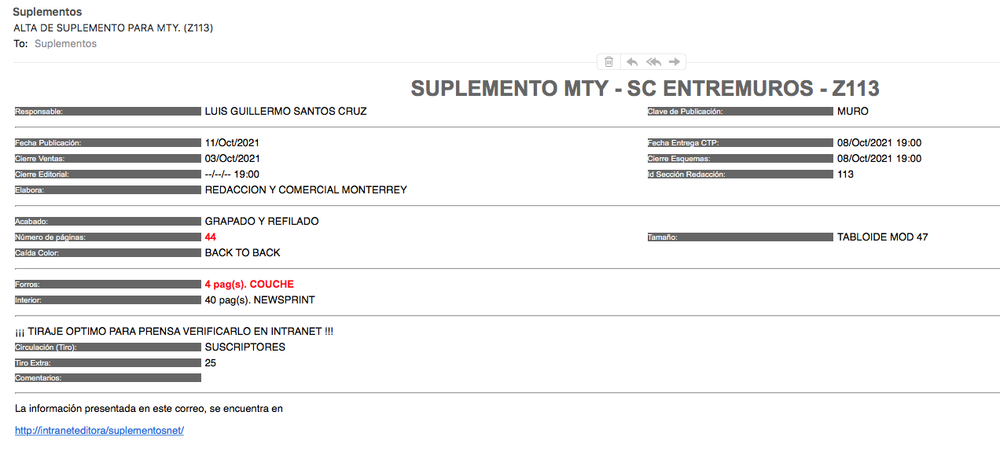
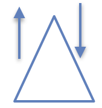
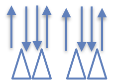
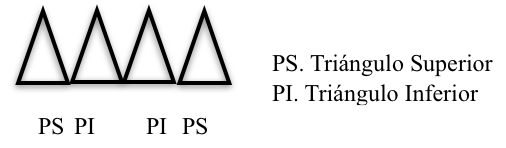

INTRANETS OPERATIVAS
Acomodo de productos a imprimirse en cada prensa y configuración de compaginaciones.
http://intraneteditora/pcube/Produccion/

Muestra las publicaciones más recurrentes, así como los esquemas exportados y sus diferentes visiones para consultar.
http://intraneteditora/sip/Esquemas_com/exes.asp

Muestra los esquemas ya exportados, así como las previstas de los anuncios de cada esquema
http://intraneteditora/sip/

Intranet donde podremos checar el directorio telefónico de extensiones de los diferentes departamentos.
http://intraneteditora

Documentación operativa del XQ
http://operacionesinternetlx/lamp/KBw/index.php/Building_Block:XQ%2B
Esta intranet es para que la gente de prensa vea que llevan en cada prensa, que secciones y en que tiro. A diario hay que acomodar los tiros en cada prensa, así como las secciones correspondientes a cada tiro.
OJO solo se asignan las secciones diarias de Norte y Metro; Sol, las ediciones y demás publicaciones las asignan en prensa. Hay excepciones, como en el caso de los suplementos que son para todo el tiro y que
por sus características pueden ir combinados con secciones diarias, en estos casos, y para poder asignarlo a una prensa y un tiro del día lo que se debe hacer es darle un click con el botón derecho del mouse estando
sobre el nombre del suplemento, aparecerá un menú del cual se debe dar click donde dice ESQUEMA ESPECIAL, confirmara el cambio y listo.
En esta intranet aparecen las publicaciones o secciones que recurrentemente se utilizan, así como la cantidad de esquemas que se han exportado de cada una de ellas, ademas muestran las diferentes versiones de los
esquemas, las cuales se pueden consultar para verificar si se hizo algún cambio o si se colocó correctamente un anuncio desde la primer versión o subsecuentes.
Esta intranet, comparte información con la intranet de PCUBE, por ejemplo, si llevamos un Cover o algún suplemento en tamaño estándar y que se tenga que compaginar con alguna sección de Norte, será necesario el
darla de alta en esta intranet para que aparezca en el PCUBE, y de esta forma poder asignarle una prensa por donde se procederá a imprimir y así la gente de producción vean que es lo que llevan para tal o cual día de producción.
En esta intranet es donde revisamos los esquemas que se han exportado, previstas de anuncios ya exportados, así como un apartado de anuncios en donde podremos consultar quien lo carga, información de cuando se cargo el anuncio, así como las previstas de dicho anuncio.
Documentación operativa del XQ
En esta intranet podemos encontrar toda la información a detalle relacionada con el manejo del XQ, que es el programa con el que se elaboran los esquemas de todos o la grana mayoría de los productos que se manejan, aquí encontremos más detalles del manejo y funcionamiento del XQ.
DIAGRAMAS OPERATIVOS GENERALES


En INDESIGN se revisa que todos los anuncios tengan página, esto es utilizando el WARP, si después de que se exporta el esquema aparece un anuncio sin página asignada en la paleta de
anuncios es necesario correr el rol de anuncios, cargarlo en el esquema y colocar el anuncio, esto se hará las veces que sean necesarias.
Todos los anuncios que aparecen en el listado de IND después de que son capturados por desplegados, agencias y/o publicistas, dirección comercial decide si se autoriza o no, después de autorizarlos y/o facturarlos es cuando aparecen en la paleta de anuncios en IND. Salvo en algún caso donde el cliente pague todos los recargos, el mismo sistema lo autoriza, normalmente desplegados avisa en estos casos preguntando si hay espacio o no para dicho anuncio.
Si un anuncio esta cargado pero no lo autorizan, se deja en el listado de anuncios sin página asignada.
ROL DE ANUNCIOS
Se corre en una aplicación en PC las veces que sea necesaria, esta aplicación lo que hace es consultar la base de datos y generar el listado de anuncios asignados para la fecha de publicación
a trabajar. Los datos que contiene el ROL los llena la gente de desplegados, publicistas y agencias. Algunos datos que contiene el ROL son: Datos del anuncio, medida, nombre del publicista,
nombre del diseñador, forma de pago, ubicación para el anuncio en caso de pagar página determinada, entre otros.
La aplicación que genera el rol de anuncios los mantiene como respaldo sólo por una semana, (7 días).
El rol de anuncios lee lo que se captura en el sistema de desplegados.
Al ser publicaciones se debe correr el rol de anuncios para cada una , por ejemplo, Funerarias, ofertas, teatros, sugerencias del Chef (va dentro de Gente los domingos), NYT, De Viaje, Sociales, Ofertas Sol, Ofertas Metro.
La hora en que se corren los roles de anuncios son las siguientes:
Norte se corre a las 14:00
Metro se corre a las 15:30
Sol se corre a las 18:30
Ediciones se corre a las 18:30 (puede variar)
En el volumen de ROLES BAK, dentro de PAGEMTY se tiene un respaldo de los roles de una semana atras basado en la fecha en que se corre el rol.
Flujo de anuncios
Los anuncios cargados por Desplegados, Agencias, Publicistas e Interplazas, se cargan al momento de generar el ROL, el listado de anuncio que se genera con el ROL se envía al XQ, se hace el esquema, se exporta, y luego se verifica que los anuncios aparezcan con número de página y publicación asignada en la paleta de anuncios de Warp en INDESIGN.
Para correr el rol nuevamente se verifica en el listado de anuncios en IND (WARP) o en el apartado de anuncios del SIP, y aparece el nombre del anuncio sin página asignada.
Algunos Roles
| F | - Esquelas (Funerarias) |
| Spos | - Sin Posición |
| Nac | - Nacional |
| Inte | - Internacional |
| Teat | - Teatros |
| O | - Ofertas |
| Intf | - Interfase |
XQ
XQ es la aplicación por medio de la cual creamos los esquemas de los diferentes productos o publicaciones, se hace la asociación de COVER/SOLAPA para su correcto despliegue en los
medios digitales, entre otras funciones.
Cargar esquemas a trabajar
Primero se abren los esquemas de acuerdo a la fecha de publicación que se valla a trabajar

Se debe seleccionar la fecha de publicación del producto o esquema, y se le asignará una prensa.

Después se descargan los anuncios de la sección, más los que son sin posición.
En caso de llevar un anuncio doble, se le da con el botón derecho a la página, en propiedades y se pone como doble página, o solo se coloca dicho anuncio, al hacer
esto el sistema junta las dos páginas.
IMPORTANTE:
El esquema que se ocupe deberá tener el FORMATO correcto de acuerdo al tamaño, por ejemplo:
| TAMAÑO | FORMATO |
|---|---|
| Estandar (Norte) | Estandar47 |
| Tabloide | TabloideRefilado47 |
| Cancha | Tabloide47-RefiladoEdiciones |
| Ediciones | TabloideRefilado47 |
| Carta | Carta |
| Metro / Sol | TabloideSinRefilar47 |
Estos formatos se deben de considerar al momento de que se requiera hacer un esquema para un COVER, por ejemplo, si el COVER se va a publicar con alguna sección de Norte o tamaño estándar,
el formato será Estandar47; si fuera para Cancha, el formato sería Tabloide47-RefiladoEdiciones.
Para estos casos ya se tiene, por decirlo de algún modo, definidos que esquemas podemos usar para cada cover según el tamaño:
| Nombre del esquema | Clave del esquema | Tamaño | Formato |
|---|---|---|---|
| COVER O INSERTO | NCOV | Estandar | Estandar47 |
| COVER O INSERTO 2 | NCV2 | Estandar | Estandar47 |
| COVER O INSERTO 3 | NCV3 | Estandar | Estandar47 |
| SUP. DEPORTES (para Cancha) | NESP | Tabloide | Tabloide47-RefiladoEdiciones |
El formato de estos COVERS o de algún otra publicación se puede cambiar siempre y cuando
aun no se halla abierto dicho esquema, dicho cambio de formato se hace cuando se busca el esquema en el apartado de DISPONIBLES en la
ventana que se despliega al abrir un esquema:

Para cambiar el formato se deberá hacer lo siguiente:
- Seleccionar el esquema (siempre y cuando no se halla abierto aún)
- Especificar la fecha de Publicación
- Marcar la caja de Cambiar formato
- Seleccionar el formato deseado
- Indicar la cantidad de páginas que llevará el esquema
- Seleccionar alguna Prensa
- Presionar ACEPTAR
En caso de que por alguna razón no se halla podido hacer dicho cambio de formato, será necesario localizar a Victor Ponce para que nos ayude con este cambio.
Como mostrar anuncios
Ya que se abrió el templete de la sección a esquemar, se presiona el botón de “Actualiza Anuncios”  ,
icono de una cajita amarilla con una flechita hacia abajo, y después se presiona el botón de “Refrescar”
,
icono de una cajita amarilla con una flechita hacia abajo, y después se presiona el botón de “Refrescar”  ,
icono con una hoja blanca y 2 flechitas verdes en forma de circulo, después de esto en la ventana de abajo (runsheet), aparecerán los anuncios de la sección, así como también los anuncios sin posición.
,
icono con una hoja blanca y 2 flechitas verdes en forma de circulo, después de esto en la ventana de abajo (runsheet), aparecerán los anuncios de la sección, así como también los anuncios sin posición.

 Este botón muestra la información del anuncio cuando se coloca el cursor sobre él, es útil para cuando hay dos anuncios pero para diferente publicación.
Este botón muestra la información del anuncio cuando se coloca el cursor sobre él, es útil para cuando hay dos anuncios pero para diferente publicación.
Devolver anuncios al listado
Si se coloca un anuncio sin posición en determinada página y se va a colocar en otra sección, es necesario seleccionar el anuncio y después presionar la tecla “Delete”. Esto no afecta si se exporta el esquema y queda algún anuncio pendiente en el Runsheet.
Cancelar anuncio de manera definitiva
Para cancelar un anuncio se le da un click al icono de un cuadrito verde con un signo de admiración  , esta cancelación es definitiva y para volver a colocar el anuncio
es necesario reactivarlo, para esto es necesario seleccionar el anuncio que se cancelo en el RunSheet, dar click derecho y seleccionar la opción “Reactivar anuncio”.
, esta cancelación es definitiva y para volver a colocar el anuncio
es necesario reactivarlo, para esto es necesario seleccionar el anuncio que se cancelo en el RunSheet, dar click derecho y seleccionar la opción “Reactivar anuncio”.

Después de haberlo reactivado, ya lo podemos volver a agregar al esquema.
Agregar y quitar páginas de una subsección
Para agregar las páginas a una subsección dentro del esquema lo que se tiene que hacer es ir a la ventana de la derecha, darle click a la pestaña donde dice subsección, seleccionar las páginas a asignar y arrastrarla a la subsección correspondiente.

Si ya se habían asignado páginas a las subsecciones y se puso una que no era, lo que se hace es ir a la subsección donde se agrego la página por error, seleccionarla de la parte superior de la ventana del lado derecho
y arrastrarla a donde debe de ir.
Cuando se abre el documento para Gente (por ejemplo), se debe de tener configurado como subsección Teatros, Sugerencias y/o Vida esto para poder mandar llamar los anuncios, en el caso de teatros y sugerencias no
se les asigna páginas solo a vida.
Agregar páginas al esquema
De ser necesario agrega más páginas a la sección, es necesario seguir los siguientes pasos:
- Dar click en la pestaña de PÁGINAS en la ventana del lado derecho.
- Presionar el boton de agregar.

- Seleccionar la cantidad de páginas a agregar y en donde se desean colocar dichas páginas.
- Dar click al botón aceptar.

Borrar páginas
Cuando la sección baja de páginas se deben seguir los siguientes pasos para quitar páginas a la sección:
- Dar click en la pestaña de PÁGINAS en la ventana del lado derecho.
- Seleccionar las páginas que se borraran.
- Presionar el botón de Eliminar Páginas


Cambiar páginas a B/N
En la ventana del lado derecho, en el apartado de páginas, se selecciona la o las páginas que vallan a ser BN, después se le da click en el icono de BN  .
Por default XQ asigna todas las páginas a color (con este ícono
.
Por default XQ asigna todas las páginas a color (con este ícono  se cambia una página BN a color).
se cambia una página BN a color).
Exportar el esquema
Después de que se acomodan los anuncios en las páginas es necesario exportar el esquema para que se puedan enviar las páginas al SIP.
- Se da click al botón de EXPORTAR

- Seleccionar la opción de enviar Correo en caso de ser necesario.
- Agregar un comentario con datos importantes, si es primer tiro y en que prensa será impreso el producto.
- Presionar Exportar.

Hecho esto, después de unos pocos minutos aparecerá en el SIP el esquema, y se le asignara página a los anuncios en la paleta de anuncios de INDesigne.
Ventana de Extras
|
En esta ventana de Extras se encuentran los diferentes rellenos o banderas que podemos utilizar para complementar los esquemas, ademas de que nos permite crear un Dummy para separar un espacio especifico
para un anuncio, el cual aun no aparece cargado para sacar el ROL, estos dummies al colocarlos en los esquemas permitirán a redacción ir avanzando con el diseño de la página, y al momento en que el anuncio ya
se cargo, se saca el ROL y se reemplaza el dummy con dicho anuncio, se exporta el esquema para actualizarlo sin enviar correo si y sólo si se reemplaza el dummy, pero en caso de que se halla realizado algún otro
cambio, ya sea cancelación de anuncio o cambios de posición, en estos casos si será necesario el exportar el esquema enviando correo y dandole aviso a redacción de los cambios que se hallan realizado.
Para modificar el nombre y las medidas de los dummy se presionan las teclas FN + F2 (en MAC) para cada dato a modificar, sólo se puede modificar el primer renglón de la ventana, el resto de los registros ya están definidos y no se pueden alterar. Al eliminar un anuncio, posteriormente se podrá reutilizar pero será necesario seleccionar dicho anuncio o dummy en el runsheet y después dar click derecho para posteriormente seleccionar la opción “Reactivar Anuncio”, después de esto ya será posible volver a colocar el anuncio o dummy en el esquema. |

|
Para agregar un dummy se hace lo siguiente:
- En la ventana del lado derecho del XQ, se deberá dar click en la pestaña que dice Extras y que se encuentra en la parte inferior
- Posteriormente, nos posicionamos en el primer renglón de la parte superior.
- Para agregar y/o cambiar el nombre del dummy, es necesario presionar las teclas FN + F2, esto habilitara el cursor en el renglón para poder teclear el nombre del dummy, esta combinación de teclas será necesaria utilizarla también para modificar los módulos y columnas.
- Ya que se le asigno un nombre, cantidad de módulos y las columnas requeridas, ya sólo es necesario dar click en el renglón y dejando presionado el botón izquierdo del mouse, arrastrar el dummy a la página del esquema donde se requiera.


Cambiar anuncio a otra sección
Se pone el anuncio en el RunSheet, se selecciona el anuncio a cambiar, se le da click derecho, se selecciona cambiar sección y se selecciona la sección destino, se le da aceptar y se borra anuncio del listado de la sección origen y aparece en el listado de
la sección destino, siempre y cuando sean del mismo día de publicación.

Cambiar anuncios a otra fecha de publicación
Esta opción se utiliza para cuando integran dos publicaciones en una sola, como por ejemplo el integrar la edición de GP a SM, en este ejemplo la edición de GP publicaba los jueves y SM los viernes, aquí el cambio consistiría en cambio los anuncios de GP a SM,
y para hacer esto es necesario hacer lo siguiente:
- Seleccionar el (o los) anuncio(s).
- Dar clic derecho, se mostrará un menú. Eligen "Cambiar Sección”.
- Punto a considerar
- a) Si solo se desea cambiar la fecha de publicación y conservar la clave del esquema original.
- i. Tendrán que seleccionar en el combo la misma clave del esquema.
- ii. Cambiar la fecha de publicación (por definición se muestra la fecha de publicación original), tiene que escribir la fecha como año-mes-día. Ejemplo: 2016-12-30
- iii. Dar clic en "Aceptar".
- b) Cambiar la fecha y la clave del esquema.
- i. Seleccionar en el combo la clave del esquema destino.
- ii. Cambiar la fecha de publicación (por definición se muestra la fecha de publicación original), tiene que escribir la fecha como año-mes-día. Ejemplo: 2016-12-30
- iii. Dar clic en "Aceptar".

Generar listados de anuncios
Este tipo de listados son utilizados para las ediciones suburbanas, esto se hace siguiendo estos pasos:
- Presionar el Ícono de impresión que se encuentra en la barra de herramientas en el lado izquierdo.

- En el menú Herramientas, seleccionar Envío de Correo.
- Aparecerá una ventana donde se deberá escribir el correo electrónico destinatario y un título para identificar el correo.
- Se le da click al botón ADJUNTAR y se selecciona el archivo PDF que se creo cuando se le dio click al botón de la impresora.
- Y por último se le da ENVIAR.

Cambiar fecha de publicación a un esquema ya creado
Este procedimiento se debe realizar solamente cuando no se han enviado páginas, y confirmando con la gente involucrada con dicho esquema la nueva fecha, esto es importante debido a que esta acción realizan una gran cantidad
de movimientos en las bases de datos.
- Ir al menú CONFIGURACIONES
- Dar click en la pestaña CAMBIO DE FECHA
- Seleccionar la fecha actual del esquema a cambiar.
- Seleccionar el Suplemento al cual se le quiere cambiar la fecha del listado que aparecerá en la parte baja de la ventana dando doble click.
- Se llenaran los datos que muestra la ventana en la parte de arriba de acuerdo al producto seleccionado.
- Seleccionar la nueva fecha.
- Dar click al botón CAMBIAR FECHA.
- Confirmar el cambio de fecha.

Como quitar un esquema ya exportado
Esta opción será útil en los casos en los que se exporto un esquema (Buena Mesa, por ejemplo), como sección independiente, pero que después se decidió que se integraría en el cuerpo de Gente, entonces, al hacer nosotros el siguiente procedimiento se quitara el esquema que se exporto de Buena Mesa del SIP para que ya no se pueda ver.
Pre-requisitos para quitar un esquema ya exportado
- Tiene que haber un esquema exportado y activo.
- El esquema que actualmente es la última versión no deberá de tener anuncios en sus páginas.
La acción de quitar un esquema del SIP. Se refiere a quitar la última versión activa del esquema exportado, no se quita versiones intermedias.
- Para quitar un esquema de SIP se tendrá que hacer lo siguiente:
-
- Abrir el esquema que se desea retirar.
- Quitar los anuncios de las páginas.
- Exportar una nueva versión.
- Quitar todas las páginas y volver a exportar una nueva versión.
- Si es exitoso el procedimiento se mandará un mensaje de operación exitosa: "Se quitó correctamente el esquema de la intranet del SIP."
En caso de error se mostrará un mensaje con la causa.
- Posibles mensajes de error:
-
-
"No existe un esquema activo, por lo que no es posible quitar el esquema."
Esto ocurre porque se quiere eliminar un esquema que no se ha exportado. -
"El esquema activo tiene al menos un anuncio en sus páginas. Es necesario exportar un esquema sin anuncios, para quitar el esquema."
Esto ocurre porque el esquema activo aún tiene páginas con anuncios.
-
"No existe un esquema activo, por lo que no es posible quitar el esquema."
Asociación de esquemas
En configuraciones se seleccionan los esquemas a combinarse (ejemplo NACIONAL y Cover).
Al hacer el enlace de un esquema con un Cover o inserto se crea un registro, el cual se puede editar para corregir algún dato que se halla capturado de manera incorrecta. Esto se
hace dandole click al botón de editar, se corrige y se graba de nueva cuenta, después de seleccionar el registro de la ventana en la parte inferior.

SUPLEMENTOS EN XQ
Se selecciona “Disponibles”, se busca por nombre, se le asignará la fecha de publicación, se configurará el formato (en caso de ser necesario), se le asigna la cantidad de páginas que llevará, se le asigna una prensa y se abre el esquema. Se descargan anuncios y se colocara en las páginas que nos indique el responsable del suplemento o se exporta en blanco de ser necesario.
Configuración de Subsecciones
Cuando se agregan subsecciones (por ejemplo Negocios dentro de Nacional), hay que eliminar la subsección para que no descargue los anuncios de Negocios.
En esquema/configurar esquema, se cierra el documento, se cierra la subsección y se vuelve a abrir.
IMPORTANTE: Una subsección no puede estar en dos secciones al mismo tiempo para el mismo día de publicación.


Configuración de Esquemas Multiplaza
Este tipo de configuración se utiliza para cuando un suplemento se va a publicar en dos plazas diferentes, pero con el mismo espacio.
- Para que un esquema sea multiplaza se debe de configurar de la siguiente manera:
-
- Dar click en el menu Configuraciones.
- Dar click en la pestaña de Esquemas Multiplaza
- Buscar el que será el esquema Padre.
- Dar Click en el botón de Padre, para que aparezca en el lado derecho de la ventana.
- Buscar el (los) esquema(s) que seria la replica.
- Cuando se encuentra cada uno de los esquemas replica se le da click al botón Replica.
- Se selecciona la fecha de publicación.
- Y se presiona el botón de Exportar.

POLÍTICAS COMERCIALES
Las páginas estandar tienen 14 módulos de alto y 6 columnas de ancho.
Las páginas tabloide tienen 12 módulos de alto y 5 columnas de ancho.
La cantidad de páginas la define la cantidad de anuncios.
Cuando nos solicitan espacio para un anuncio primero se refieren a los módulos y luego a las columnas.
Se debe respetar posición de anuncios y se debe dejar espacio suficiente a redacción para notas y/o foto notas.
Los anuncios que ofrezcan los mismo productos o servicios no pueden ir juntos. Si dos anuncios están asignados a la misma página siendo planas completas, se debe verificar con subdirección (Eduardo Martinez o Carlos Ortiz), para que nos indiquen a que anuncio se le da preferencia para dejarlo en dicha página.
Todos los anuncios deben de ir cargados hacia el lado del folio estando los anuncios más anchos en la parte baja, hay casos especiales en los que esta regla se rompe, esto puede ser por alguna necesidad editorial o algún acuerdo que se halla hecho con el cliente propiamente, o alguna otra.
Los anuncios que son plana lleva mayor prioridad, después los anuncios más pequeños.
De preferencia en las contras debe de ir un anuncio, en caso de no haber se les avisa a Subdirección.
En las contra portadas debe de ir anuncio, de preferencia el mas grande, de lo contrario pudiera ponerse alguno de los que se tenga, dando prioridad a las planas completas, esto se deberá confirmar con subdirección
comercial. En caso de que los anuncios que se tengan cargados, todos esten pagandi página impar, se les debera de respetar dicha posición, aun y que esto implique el no poner anuncio en la contra portada.
Se debe considerar espacio para toda la edición y no solamente para la sección al momento de asignar las páginas a cada sección siempre y cuando el espacio no sea demasiado, esto se hace por si hay que agregar anuncios o si redacción pide espacio.
Cuando se llevan 3 planas de supermercados no deben estar juntos, pero también hay que considerar en que posición se ponen para no parecer que se esta beneficiando a tal o cual cliente, procurar asignarlas en páginas impar o centrales.
Los anuncios de mueblerías se deben cuidar los competidores directos, por ejemplo Gala o R Torres, procurando no muy juntos y sin dar preferencia a ninguno de los dos, salvo que nos den alguna indicación para colocarlo en una página determinada.
Las guías de los anuncios no deben indicar alguna página en especifico, el nombre de la guía debe de coincidir con el contenido y cliente, de no ser así verificar en SIP prevista del anuncio para no emparejarlo con alguno de sus competidores.
Si son muchos anuncios, si se pueden abrir mas páginas para redacción, siempre y cuando el juntar todos los anuncios den muchas páginas comerciales, hay que considerar espacio para redacción de tal manera que quede balanceado entre comercial y editorial.
Hay secciones donde no aplica del todo este criterio, por ejemplo Negocios, Buena Mesa (en este ultimo caso no se puede dejar muy poco espacio ya que es una sección semanal).
Se pueden acomodar varios anuncios para llenar una página dependiendo el acomodo del resto de los anuncios y viendo posibles movimientos más tarde.
El acomodo de secciones en PCUBE se hace ya cuando se tiene un aproximado del total de páginas por sección, en caso de ser necesario adelantar una sección al primer tiro y que era segundo se consulta con editores para saber si pueden entregar temprano, en caso de que ninguna pueda, se habla con Subdirector Editorial (Lourdes Solís), se le plantea el caso para que designe que sección es la que cerrara temprano.
Adelantos para publicarse el Lunes
Cerca de las 20 hrs. del sábado, se hacen los esquemas de la publicación del lunes, esto para que la gente de prensa vea cuantos tiros llevan para programarse con personal en caso de ser necesario.
Cancelación de anuncios
Cuando un anuncio se cancela se debe recibir un correo informativo y en la paleta de anuncios del IND aparecerá en gris, pero si el anuncio cambió de fecha de publicación desaparecerá de la paleta de anuncios y aparecerá en el día en que se publicará.
Si se cancela un anuncio que era plana completa y ya se había enviado esquema y correo, y ya son las 18 hrs. se debe avisar a redacción del cambio y se verifica si se puede poner otro de menor o igual tamaño o se le quitan 2 páginas a la sección dependiendo el caso.
Al borrar anuncios que no se usan, asegurarse que no se halla borrado algún otro anuncio de la sección que no debiera.
Cambios en secciones de Segundo Tiro
Si hay agregados de anuncios en secciones de Segundo tiro se pueden hacer los cambios en el esquema, se exporta y se le avisa a diseño si es tarde pero si son antes de las 4 PM se pueden agregar sin problema. Cambios considerables en los espacios
Si después de que se envían los esquemas (3 PM) junto con el correo, cancelan o agregan anuncios, se debe revisar si las páginas no están enviadas, de ser así, se le comenta a subdirección comercial que la página ya está elaborada, si es necesario el cambio se le comenta al editor y ya se decide. Si el cambio es pequeño y no afecta tanto el diseño solo se le avisa al editor para que revise, si los cambios son mayores se consulta primero para saber qué procede, esto para no atrasar cierres y evitar problemas en las juntas que se hacen a diario.
Cuando se cancela un anuncio, Redacción se adecua para llenar el espacio o mover ciertos anuncios.
En caso de quedar mucho espacio para Redacción lo recomendable es dejar dicho espacio lo más al frente posible, de preferencia a las dos primeras páginas para darle oportunidad a Redacción de continuar con el
contenido que llevará en la portada.
Los anuncios que son competencia se debe procurar no dejarlos ni muy juntos, ni tan separados y ni tan atrás.
Si dos anuncios media plana deben ir en página impar (por ejemplo página 3), y uno de ellos pagó posición por estar en la página 3, la manera en la que se le da más importancia es colocándolo en la parte de arriba de la página.
DUMMYS
Los dummys se utilizan para reservar espacios provisionales en lo que se carga el anuncio para después reemplazarlo, estos aparecerán con un color verde y al final de el nombre que le asignemos, el XQ le agrega un dígito más, el cual es un dígito de control, para evitar que el nombre se repita y poder agregar dicho dummy en varias páginas.
Rellenos y Tarifas
Tanto las banderas, rellenos y tarifas que se utilizan para emparejar el acomodo de anuncios en los esquemas, son actualizados sus diseños por la gente de diseño comercial. Tanto los rellenos como las tarifas nos ayudan a encuadrar los espacios en los que queden de manera dispareja o muy irregulares, lo ideal es utilizarlos lo menos que se pueda.
El relleno de Consulta el Obituario (se tienen disponible en 2 x 1 y 3 x 1), se deberá de colocar junto con esquelas o en algunas ocasiones, dependiendo los espacios, podría ser colocado en alguna otra página
donde llevemos algún anuncio, pero siempre y cuando en la página de enfrente lleve esquelas.
Subsecciones
Las subsecciones tales como Teatros y Ofertas siempre deben de ir juntos todos los anuncios correspondientes a dichas subsecciones en una misma página, en caso de llenar una página y aun quedar varios pendientes se colocan frente a la página llena de tal forma que sigan estando lo más cerca posible.
Dato Curioso
A los anuncios que van del lado contrario a las reglas de cargarlos hacia afuera se les llama PATA DE PERRO.
Los anuncios que salían en las orillas de las cabezas les llamaban OREJAS.
IDENTIFICACION DE COLORES NORTE
Prioridad en los anuncios de acuerdo a los colores, iniciando con el numero 1 los de prioridad máxima:
- ROSA ( paga página 3 o 5)
- Naranja (página determinada)
- CELESTE o AQUA ( paga ultima página)
- ROJO (Página impar)
- AMARILLO (Paga por la tarifa de la sección)
- AZUL (paga menos, página par)
- VERDE OBSCURO ( no paga posición)
- CELESTE más obscuro (Para portada)
Los anuncios que pagan tarifa base de la sección y los que pagan página par, llevan preferencia sobre los que son sin posición (anuncios color verde) aun y cuando sean planas, se tratara de dar la mejor posición después de los anuncios de la sección.
Hay que procurar agrupar anuncios del mismo ancho en una misma página.
Si se tienen varios anuncios que pagan página impar pero no hay para la contra, se coloca en ultima el anuncio más grande. En caso de tener un anuncio a todo lo ancho y un tercio de la página y se coloca un cuarto
sobre este y el cuarto paga página impar y están libres 3 y 5, no se puede dejar en ultima, la preferencia es colocarlo en impar ya que fue lo que el cliente pago.
Quienes autorizan movimientos de anuncios en NORTE
Si hay dudas en cuanto a la ubicación de anuncios, agregados, cancelados, más espacio para redacción, para pedir autorización de mover o agregar anuncios se consulta con:
| Norte ---------------------- | - Eduardo Martinez o Carlos Ortiz |
| Metro/Sol ---------------- | - Bernabe Gómez |
| Ediciones Suburbanas | - Jorge Garza |

LOCAL
Local (Publicación lunes a viernes; sábado y domingo no lleva la columna de entre picos.
-
Responsables Local:
-
Salvador Villarreal 8182 David Torres 8192 Humberto Castro 8294
| Portada | 2 Cols. Entre picos, tres modulos abajo | Páginas depende de la cantidad de Anuncios. Se debe de colocar tambien los Edictos procurando queden juntos | Port. Seguridad | 2a Página Seguridad Ofertas | Contra |
Local (Importas los roles de Local, Seguridad, Ofertas, Avisos Notariales (edictos)).
Publicación Lunes a Viernes lleva Portada, columna entre picos página 2 (1 columna de 11 módulos y abajo 3 módulos libres, lo), anuncios distribuidos en las páginas necesarias, Portada seguridad, Ofertas y/o Edictos (varia posición dependiendo de anuncios o espacio), contra.
Publicación Sábado y Domingo lleva Portada, anuncios distribuidos en las páginas necesarias, Portada seguridad, Ofertas y/o Edictos (varía posición dependiendo de anuncios o espacio),contra.
Publicación Domingo, si hay muchos anuncios de ofertas que casi llenan la página, se le pone un cintillo de tarifas en la parte baja, arriba los anuncios de ofertas y luego arriba la bandera, esto se hace para no dejar espacios en blanco.
En las publicaciones de los lunes por lo regular no hay mucha información, por lo que se procura dejar la sección lo mas apretada que se pueda.
Se recomienda dejar espacios grandes del lado derecho para notas de Redacción siempre y cuando se tenga un balance entre editorial y comercial, esto ayuda a dar preferencia a algunos anuncios que pagan tarifa base y dependiendo del tamaño del mismo; cuidando también que los espacios cuadren.
Los anuncios de local se pueden mover a seguridad, de seguridad a Local NO, salvo en casos extraordinarios. Si en Local hay muy poco espacio para Redacción y Seguridad tiene 2 páginas, se intercambian, los anuncios que pagan Seguridad deben ir frente
a la portada de Seguridad, incluidos los de ofertas.
Si un anuncio está pagando página impar y ya no hay disponibles solo en la segunda página de seguridad se mueve a esta página siempre y cuando esta sea impar.
Los edictos de preferencia deben ir juntos en la medida de lo posible y procurando que estén en la página, no deben tapar anuncios.
Procurar páginas llenas por anuncios, recomendado intercalar páginas llenas y Redacción.
Si se llegan a combinar edictos y Ofertas, Ofertas siempre van en la parte baja de la página.
El apartado de Local debe tener mas espacio que el de Seguridad.
NACIONAL
- Responsables en Reforma:
-
Edgar Cera 7237 Eloisa Cabrera 1270 Laura Gonzalez 1287 ERASMO ALDAPE GARCÍA 1273 Juan Carlos Villeda 1223 AURA GARCIA 7142 Ruben Hdz. 7246 Jose de Jesus Murillo 7173 Miguel Tamayo 8108
Nacional (publicación de Lunes a Viernes)
| Portada | Port. Nac. | Pag. 3 | Cartas el nte. | # págs. Dep. anuncios | Editorial | Editorial | Port. Internacional | Port. Negocios | Numérica | Wall Street | Opinion | Contra |
| Negocios | ||||||||||||
La página 4 siempre lleva un anuncio de Suscripción, y se dejan libres dos columnas completas hacia adentro (al medianil) para la columna de cartas a el NORTE. En caso de no estar cargado el anuncio se pregunta por el.
Las páginas editoriales de preferencia se deben de dejar en las páginas 8 y 9.
Nacional (publicación de Sábado)
| Portada | Port. Nac. | Pag. 3 | Cartas el nte. | # págs. Dep. anuncios | Editorial | Editorial | Port. Internacional | Port. Negocios | Vida | New York Times | New York Times | New York Times | New York Times | Contra |
| New York Times | ||||||||||||||
Nacional (publicación para Domingo)
| Portada | Port. Nac. | Pag. 3 | Cartas el nte. | # págs. Dep. anuncios | Editorial | Editorial | Proceso | Port. Internacional | Contra |
Lleva una página editorial adicional llamada “Proceso”, esta página les marcará como subsección Nacional.
Los anuncios del apartado de Nacional procurar no moverlos a Internacional, pero de Internacional a Nacional sí se pueden mover.
Acomodar anuncios en una misma página siempre y cuando no sean competencia.
Procurar dar primeras páginas para los anuncios de la sección, así como a Redacción.
Si hay muchos anuncios que pagan página impar es importante el tratar de agruparlos en planas para no tener demasiadas páginas por llenar.
Cuando Redacción pide más espacio se procura darles lo más posible de acuerdo a la cantidad total de anuncios que se lleven.
En caso de haber algún cambio de ubicación de algún anuncio después de que se envía el correo (3 PM) se le avisa a Redacción del cambio, ellos nos
informan si se puede o que movimientos se tienen que hacer, pero si es Redacción quien pide más espacio o algún cambio después de enviado el correo
es necesario consultarlo con Subdirección Comercial para que ellos confirmen el aumento de espacio y/o de páginas.
Procurar siempre que páginas editoriales queden en las páginas 8 y 9, esto para que sirva como un separador de subsecciones entre Nacional e Internacional; no dejar demasiado espacio para Redacción.
El anuncio de mayor tamaño va hacia afuera generalmente.
Se debe procurar generar la menor cantidad posible de páginas, siempre y cuando los anuncios y eventos lo permitan, procurando se tenga opción para ampliar la cantidad de páginas.
Políticas para la sección Nacional
Si con varios anuncios se llena una página se le puede dar una página más a Internacional, siempre y cuando los anuncios no tengan posición determinada.
En caso de haber pocos anuncios y se tienen rolados dos anuncios para Internacional, se procura sólo dejar una página a Internacional y la otra se pasa a Nacional junto con los anuncios.
Esquelas
Funerarias siempre van en la sección Nacional, hay casos especiales donde podrían salir en Cancha, por ejemplo, de ser el caso nos avisan, si por el contrario aparece cargada una esquela
en Cancha o en cualquier otra sección y no hay aviso se pregunta si se deja, se cambia o no sale.
En la medida de lo posible y si los anuncios lo permiten, dejar espacio para las esquelas.
Acomodar esquelas del mismo ancho en una misma página.
En caso de haber muchas esquelas se debe procurar dejar espacios fijos para redacción, esto para que puedan ir trabajando y así procurar ya no mover dichos espacios.
Las esquelas se procurará no mezclarlas con anuncios, y en caso necesario, se pueden colocaran unas pocas esquelas con anuncio (esto ya como un caso de ultimo recurso), pero siempre y cuando sean
más chicas que el anuncio, esto se hará en ciertas ocasiones en las que redacción no tenga mucho material como para aumentar el número total de páginas.
En caso de que ya no se tenga espacio para poner más esquelas, se agregan 2 páginas a la sección.
NOTA IMPORTANTE: es bueno identificar la esquela de una persona (es en la que se especifica la fecha de fallecimiento de la persona, así como el lugar en donde será velado o se llevara acabo el servicio),
esto para que si van muchas condolencias para dicha persona, el orden correcto es que siempre valla primero la esquela y después las condolencias (estas son las que familiares y amigos publican a manera
de apoyo y solidaridad hacia ellos por el fallecido).
NEGOCIOS
- Responsables (editores):
-
Luis Diaz 8133 Hector Perez 8245
Lunes a Viernes. Lleva portada, página 2 anuncio de Value (numérica), Opinión (en ocasiones podemos colocar un anuncio, puede ser 1/4 o cintillo), Wall Street Journal.
Sábado. Este día solo se publica una página.
Domingo. La sección no se publica.
IMPORTANTE: Cuando se encuentre cargado el anuncio de MARCA_PATEK o PATEK_PHILIP a un cuarto de plana (7 x 3 ), dicho anuncio deberá de ir siempre en impar en la parte de arriba, aun y cuando valla sólo en la página.
GENTE
| Responsables: | |
| Hector Rosas | 8553 |
| Eduardo Molina | 8574 |
| Luis Fernando Garcia | 2189 |
Publicación de Lunes a Jueves.
Roles a importar: Gente, Teatros, Vida, Sin posición y/o Suplementos especiales)
| Portada | Páginas depende de la cantidad de Anuncios. | Página 3. Columna de Cine a la izquierda | Portada Vida | Segunda de Vida | Contra |
Lleva portada, columna de cines en página 3 o donde se acomode al lado izquierdo, teatros, Portada Vida, segunda de Vida, contra.
Publicación de Viernes.
Roles a importar: Gente, Teatros, Vida, Buena Mesa, Spot, Sin posición y/o Suplementos especiales)
| Portada | Páginas depende de la cantidad de Anuncios. | Página 3. Columna de Cine a la izquierda | Portada Vida | Segunda de Vida | Buena Mesa | Páginas adicionales para Buena Mesa, dependiendo de la cantidad de anuncios | Contra |
Normalmente lleva un anuncio doble plana de Farmacias Guadalajara en centrales.
En el caso de que se carguen anuncios en Spot, se deberá rolar esta publicación, y los anuncios se
agregarían en Gente ó si tienen algún tipo de encargo debemos de consultarlo con Eduardo Martinez, ya que también podríamos ponerlos en Buena Mesa.
Publicación del Sábado.
Roles a importar: Gente, Teatros, Moda, Suplementos especiales y/o Sin posición)
| Portada | Páginas depende de la cantidad de Anuncios. | Página 3. Columna de Cine a la izquierda | Portada Moda | Contra |
Lleva portada, columna de cines en página 3 o donde se acomode al lado izquierdo, teatros, Moda y contra.
En este día normalmente llevamos varios anuncio de Mueblerías, entonces tratamos de que no estén juntos, y en caso de ser necesario podemos poner un anuncio de este tipo en
la página que sigue de la portada de Moda, y se indicaría que es de Gente, salvo que lleve algún anuncio para Moda.
Publicación del Domingo.
Roles a importar: Gente, Teatros, Vida, De Viaje, Suplementos especiales y/o Sin posición).
| Portada | Páginas depende de la cantidad de Anuncios. | Página 3. Columna de Cine a la izquierda | Portada Vida | Perfiles | Páginas adicionales para Vida segun canidad de anuncios | Portada De Viaje | Páginas adicionales para De Viaje depende de cantidad de anuncios | Contra |
Lleva portada, columna de cines en página 3 o donde se acomode al lado izquierdo, teatros, Portada Vida, Perfiles e Historias, De Viaje y contra.
Los Viernes se saca el Rol de De Viaje, se esquema y se les envía una imagen de los espacios para De Viaje a Reforma que es donde arman la sección
(Patricia Miranda, Omar Cabrera, Miguel Andrés Gonzalez y Juan Carlos Molina), así como un pdf del esquema para que vean los espacios que tendrán que llenar de acuerdo a los anuncios cargados.
Política Comercial para GENTE
Los anuncios no se deben mezclar con los Teatros, de preferencia se deben agrupar teatros con teatros, de tal manera que no se confundan con otros. La columna del cine puede variar su ubicación dependiendo de la cantidad de anuncios y los espacios que se tengan.
VIDA y MODA
| Editores Responsables de Vida: | |
| Claudia Guerra | 8291 |
Vida va dentro de Gente normalmente de Domingo a Viernes y se le dejan 2 páginas. Los Sábados va en dentro del esquema de Nacional, después de la página de Negocios y será sólo 1 página, a menos
de que se halla cargado un anuncio pidiendo salir en dicha sección.
En la publicación del sábado MODA van dentro de Gente y será sólo 1 página, para este caso se le envía un correo a Jose Luis Ramirez Carrera, y se le agrega una impresión de pantalla de la o las páginas
que lleve para la sección de Moda.
Vida (publicación del domingo)
Perfiles e Historias va dentro de Vida.
Los domingos siempre sale un apartado que se llama PERFILES e Historias, de preferencia 1 página (2 paginas totales para vida, 1 para la portada, otra para la Perfiles y en caso de que estén cargados anuncios
para Vida, se le agrega una página más), y de haber anuncios, sólo cintillos se pudiera colocar uno en la página la de Perfiles.
CANCHA
- Responsables:
-
Ruben Moreno 8299 Jose Celstino 8116 Adolfo Gonzalez 8174
| Portada | 2da. Redacción | 3a. Redacción | Páginas adicionales dependen de la canidad de anuncios | Mona | Editorial | Contra |
El mínimo de páginas es de 12 con 2 planas de Comercial.
16 páginas si lleva hasta 4 planas completas de Comercial.
20 páginas si lleva más de 4 planas completas de Comercial.
La cantidad máxima de páginas es de 32 a imprimirse en la prensa Metro 4, en caso de que sean más de estas 32 páginas, será necesario cambiar la sección a la Metro 3.
Maneja páginas a 5 columnas en un formato tabloide-refilado-47.
Las dos últimas páginas siempre son de Redacción y en ocasiones de llevar anuncio en determinado evento avisan.
Las páginas 2 y 3 llevan cintillos, no puede llevar páginas completas, salvo en ciertos casos especiales, puede ser por acuerdo con el cliente o por necesidades editoriales.
En la portada la mayoría de las veces llevamos un cintillo de Caliente.
Al igual que en norte, se procura siempre llevar un anuncio en la contra.
En caso de haber algún anuncio para página determinada y no hay anuncio para la contra, siempre se consulta si se puede pasar a la contra o se deja en la posición que solicita.
Si no hay anuncio para la contra podemos poner algún anuncio que sea de media plana o 1/4, pero esto de preferencia se necesita confirmar con Subdirección Comercial.
Si Redacción requiere más de 12 páginas, ellos tienen que hablar con subdirección para que autorizen y posteriormente nos confirmen en esquemas para poder aumentar páginas,
esto es para los casos en los que por la cantidad de anuncios NO justifica más de 12 páginas.
EMPRESAS
Eduardo Martinez nos informará si llevan o no portada vía correo electrónico, y ya sea Angel Cazares, Ricardo Alarcón o Dante Garcia, nos informaran del total de páginas para posteriormente exportar el esquema.
Para la publicación de los Sábados, en caso de no llevar portada de empresas, todos los avisos de ocasión se agregaran al cuerpo de Automotriz, mismo caso para la edición de Sábado para domingo con la Bienes Raíces.
NEW YORK TIMES
Se publica dentro del cuerpo de la sección de Nacional y sólo lleva 4 páginas.
SOCIALES
- Responsable:
-
Eduardo Martinez 8432
Roles para Viernes Social: SPOT (Ocasionalmente se cargan algunos anuncios y se agregan al esquema de Gente o Buena Mesa dependiendo indicaciones de Eduardo Martinez).
Rol para Muro Sociales Domingo: SC. ( En ocasiones se cargan anuncio para esta publicación de los domingos, dichos anuncios hay que agregarlos a Gente, pero para hacer esto es necesario abrir el esquema de
Muro Social a publicar el domingo, seleccionar los anuncios y hacer el cambio de sección).
DE VIAJE
La cantidad de páginas que puede llevar depende de si lleva anuncios o no, en caso de NO llevar ningún anuncio, solo se indicara una página. En ocasiones lleva una sección llamada Guía Turística, en caso de que se vean
anuncios cargados a esta publicación, se deberán rolar.
El esquema se exporta desde el viernes a manera de adelanto, pero se exporta sin enviar correo, ya que el esquema definitivo se tendrá hasta el sábado ya cuando se agreguen los anuncios que estén cargados para la
sección de Gente y Vida respectivamente.
Se enviara por correo electrónico un PDF y una impresión de pantalla de la o las páginas que se definieron para la sección, dicho correo se enviará a las siguientes personas:
Patricia Miranda
Omar Cabrera
Miguel Andres Gonzalez
Juan Carlos Molina
Así como al personal de Mesa de Ayuda y de la sección de Gente, esto para que estén enterados.
AUTOMOTRIZ
- Responsables en Reforma:
-
Zoe Lozano 7539 Jaime Sigala 1268
Se procura envíar un adelanto los jueves, sólo con dummys, y se exporta sin enviar correo.
Para las páginas de Avisos de Ocasión, se tomará como referencia la última publicación con una tolerancia de + - ½ página y dependiendo si se integraran o no los espacios de avisos de ocasión siempre y cuando
no se lleve portada para Empresas.
Los espacios para Redacción no deben ser muy pequeños ya que es una publicación semanal, se debe tener un balance entre el espacio de Redacción y Comercial, procurando no dejar en exceso espacio para
Redacción y cuidando el encuadre de espacios.
Si no hay anuncios de plana completa para la contra, podemos dejar los últimos espacios de avisos de ocasión.
BIENES RAICES
Esta sección se esquema los sábados. Las páginas de la 1 a la 3, o de la 1 a la 2 son de Redacción dependiendo de la cantidad de anuncios que se hayan cargado. Normalmente Angel Cazares, Ricardo Alarcón o
Dante Garcia nos informaran del orden y las posiciones de los anuncio, así como el número total de páginas para la sección. En caso de que la sección de Empresas no lleve portada, todos lo de aviso de ocasión se
agregaran a las páginas de Avisos Bienes Raíces.
Las páginas que son de Redacción deben de estar con la subsección BIER y para las páginas que son de Ocasión y/o anuncios de plana completa la subsección debe indicar AVBR.
METRO y SOL
IDENTIFICACION DE COLORES PARA METRO Y SOL
Color de identificación de anuncios y secciones para Metro y SOL
| Café | Seguridad /Policía |
| Gris | Obituarios |
| Verde Obscuro | Sin posición |
| Verde claro | Deportes |
| Rojo | Página Impar |
| Morado | Estelar/Espectáculos |
| Amarillo Limón | Ocasión |
| Celeste/ Aqua | Última página |
| Rojo Claro | Página 5 o 7 |
| Amarillo | Paga en Ciudad (En Norte son los de la sección con tarifa básica) |
| Azúl | Página Par |
| Naranja | Doble página/ Páginas centrales |
| Verde (más claro que el Sin Posición) | Formato especial (van sólos sin ningún otro anuncio) |
| Verde claro | Dummy formato (Se usa como complemento para formatos especiales) |
Quienes autorizan movimientos de anuncios en Metro y Sol
Si hay dudas en cuanto a la ubicación de anuncios, agregados, cancelados, más espacio para redacción, para pedir autorización de mover o agregar anuncios se consulta con:
| METRO/SOL | --------------- | Bernabe Gómez |
METRO
- Editores Metro
-
Miguel Gonzalez (de Domingo a Jueves) 8208 David Torres (Viernes y Sábados) 8192
Con ellos se ve lo de agregado de anuncios y cambios para que tomen en cuenta la mejor posición para agregar los anuncios solicitados para tal o cual sección.
SECCIONES METRO
Publicación de Lunes a Miércoles
Metro Seguridad. Inicia en la página 2 y llega a la página 8 (Al final de esta sección, llevan una pagina editorial llamada En Caliente, en la cual ocasionalmente lleva un anuncio de 2 columnas por todo lo alto).
Metro Ciudad Va de la página 9 hasta la 14.
Metro Deportes Inicia en la página 15 y llega a la 22.
Metro Espectáculos Siempre inicia en la página 23 y termina en la 31.
Metro Ocasión inicia en la página 31 y llega hasta la 33 (en promedio, o pueden ser más).
Metro Internacional inicia en la página 35 y llega hasta la 36.
Metro Editoriales inicia en la página 37 y termina en la 40
Publicación del Jueves
Metro Seguridad. Inicia en la página 2 y llega a la página 9
Metro Ciudad de la 11 a las 15.
Metro Deportes Inicia en la página 16 y llega a la 23.
Metro Espectáculos. Siempre inicia en la página 24 y termina en la 31.
Metro Ocasión inicia en la página 32 y llega hasta la 34 (en promedio, o pueden ser más).
Metro Internacional inicia en la página 35 y llega hasta la 36.
Metro Editoriales inicia en la página 37 y termina en la 40
Publicación del Viernes
Metro Seguridad Inicia en la página 2 y llega a la página 9.
Metro Ciudad de la 10 a las 15.
Metro Deportes de la 16 a la 23.
Metro Espectáculos de la 24 a la 32.
Metro Ocasión 1 página en la 33.
Metro Internacional inicia en la página 34 y llega hasta la 36.
Metro Editoriales inicia en la página 37 y termina en la 40.
Publicación del Sábado
Metro Seguridad Inicia en la página 2 y llega a la página 8.
Metro Ciudad de la 9 a las 14.
Metro Deportes de la 15 a la 22.
Metro Espectáculos de la 23 a la 30.
Metro Ocasión inicia en la página 31 y llega hasta la 33 (en promedio, o pueden ser más).
Metro Internacional inicia en la página 34 y llega hasta la 36.
Metro Editoriales inicia en la página 37 y termina en la 40
Publicación del Domingo
Metro Seguridad Inicia en la página 2 y llega a la página 8.
Metro Deportes de la 9 a las 16.
Metro Que Impression (QI) de la 17 a la 26.
Metro Ciudad de la 27a la 31.
Metro Ocasión inicia en la página 32 y llega hasta la 34 (en promedio, o pueden ser más).
Metro Internacional inicia en la página 35 y llega hasta la 36.
Metro Editoriales inicia en la página 37 y termina en la 40
Cuando se llevan muchos anuncios y todos piden salir en Policía, se acomodan en las páginas que ya se tienen, en caso de que Redacción solicite más espacio para dicha sección, se recorre el inicio de la sección de
Ciudad y de las demás en caso de ser necesario y sólo a petición de la gente de Redacción, esto dará más espacio para las notas de Redacción y un mejor acomodo de los anuncios dentro de la sección.
Se le da página impar a los anuncios de mayor tamaño, a menos que sea un anuncio más pequeño y que esté pagando página impar.
El anuncio de Melate siempre va en Deportes, normalmente lo colocamos en la página 19, tanto en Metro como en Sol.
En la publicación de los Martes del Metro llevamos las bases (cargan una media plana) y el cupón (6 módulos x 2 columnas) para el concurso de La Ganadora, para este caso, ambos anuncios deben de ir en la misma página.
Redacción casi no mueve la ubicación de las secciones, los domingos no hay sección Espectáculos, pero en su lugar va Qué Impresión, esta sección va la mayoría de las veces al centro, salvo que haya un evento relevante que
deba ir en dicha posición. Si se envía un esquema con determinado acomodo, Redacción puede cambiarlo y avisar dónde inicia cada sección.
Los obituarios van en Ciudad, la Lotería va después de Avisos de Ocasión al final de las páginas de internacional..
La página 6 de Metro se trata de dejar lo más libre para Redacción cuando es posible.
Las páginas de Ocasión se pueden correr hacia el principio o hacia el final dependiendo las cantidad de páginas finales de ocasión y si Redacción quiere más espacio para Espectáculos o Internacional.
Los anuncios sin posición se acomodan en cada sección dependiendo el producto o tipo de anuncio, por ejemplo: ropa para dama se pone en Espectáculos. No se permite colocar anuncios al final para tapar huecos de ocasión
por disminución de páginas, excepto la Lotería.
EL SOL
| Editor El Sol | |
| Ernesto Ruíz | 8167 |
| Miguel Angel Reyes Gámez | 8279 |
El rol de El Sol se corre a eso de las 18:30 Hrs.
El anuncio de Melate/Progol es gratuito y se le coloca atrás del resto de los anuncios, siendo estos los de mayor prioridad, frecuente mente es en la página 19, sin embargo, si Redacción considera necesario moverlo más
atrás o en alguna página par, lo podemos mover sin problemas.
La Lotería va fija en la página 14.
Distribución de páginas por subsección:
Policia Inicia en la página 4 y termina en la 14.
Deportes Inicia en la página 15 y termina en la 22.
Espectáculos Inicia en la página 23 y termina en la 31.
Ocasión Inicia en la página 32 y termina en la 35 (en promedio, o pueden ser más).
Internacional Inicia en la página 36 y termina en la 40.
EDICIONES SUBURBANAS
Suburbanas (Se importa el rol de acuerdo a la publicación, comidas a domicilio (anuncios de 2 columnas de 6), Promociones (anuncios de 3 columnas de 6), la edición es a 5 columnas).
Se espera acomodo previo de anuncios y solicitud de bloques por parte de Redacción en algunas ocasiones.
Para asignar el mismo el número de páginas de la publicación se calcula con base en:
# de páginas con anuncios + el mismo número para Redacción + 8 páginas extras.
Por ejemplo:
20 (págs. Anuncios) + 20 (Para Redacción) + 8 (extras) = 48.
Todas llevan dos columnas fijas en la páginas 4 aproximadamente, los Horóscopos (1 página) después de las de Escapate y antes del News, siendo este ultimo de dos páginas antes de la contraportada, salvo en
el caso de Sierra Madre que esta necesita que se separen 5 páginas.
A Jorge Garza y a Uriel Hernández Limón de comercial se les envía un listado de anuncios y una imagen del esquema; a los editores un PDF y una imagen del esquema de cómo quedan las páginas con los anuncios.
Partiendo del total de páginas llenas de comercial, más la misma cantidad para Redacción, más 8 páginas extras, se calcula el número de páginas y se acomodan los anuncios tratando de ajustarlos de
acuerdo al número de bloques que pide Redacción, con base en esto se exporta el primer esquema, Redacción hace un acomodo y Comercial también.
Los anuncios de plana completa van al principio de la edición.
Se envía un primer esquema acomodando los anuncios más grandes al principio y dejando páginas blancas para Redacción, este esquema será cambiado por Redacción pidiendo ciertos espacios en blanco o indicando en qué
páginas van los anuncios, este segundo esquema será modificado por Jorge Garza o Uriel Hernandez Limón de Comercial para indicar los lugares definitivos de los anuncios, después de este tercer esquema los cambios serán anuncio por
anuncio, en raros casos los espacios son modificados.
Días de elaboración de esquemas y día de publicación:
Lunes, SMVMartes, Linda Vista y Silla. Publican el Viernes.
Miércoles, Cumbres y Anáhuac Publican el Sábado.
Al acomodar los anuncios hay que cuidar que no se encuentren anuncios competidores directos juntos, se debe de tratar que queden separados.
Los anuncios de comidas que no son planas se colocan cerca de las comidas a domicilio.
Identificación de anuncios por color
| CAFE | Tarifa base, sin posición (similar al amarillo de norte) |
| NARANJA | Página determinada |
| ROSA | Couché |
| MORADO | Centrales, en caso de que sean más de 1 anuncio que pide centrales, se pregunta a cuál se le da esta posición. |
| AMARILLO | Comidas a domicilio |
LA SILLA
| Editor La Silla | |
| Edith Falcón | 4608 |
Los roles que se corren son el de Silla, Promociones del Sur y Comidas a Domicilio. Los anuncios más grandes primero, robaplanas pueden ir en página par, dependiendo el caso.
Antes de comidas, lleva los anuncios correspondientes a la publicación de Escápate, estos anuncios llevan un orden específico el cual nos será proporcionado por Jorge Garza o Uriel Hernandez.
Los anuncios de Promociones del Sur son subsección y aparecen en color verde. En estas páginas se cambia el ancho de 5 a 6 columnas (al igual que los anuncios de comidas a domicilio), pero solo para acomodar
estos anuncios.
Los anuncios de Comidas a Domicilio la mayoría de las veces van hasta el final de la edición, frente la pagina de los horóscopos (en la medida de lo posible), y después se dejan 2 páginas antes de la contra para el News.
ANAHUAC y CUMBRES
| Editor Anáhuac y Cumbres: | |
| Carlos Triana | 4316 |
Antes de comidas, lleva los anuncios correspondientes a la publicación de Escápate, estos anuncios llevan un orden específico el cual nos será proporcionado por Jorge Garza o Uriel Hernández.
En las últimas páginas se acomodan los anuncios de comidas a domicilio (Guía Temática,) frente a la página de los horóscopos (en la medida de lo posible), este acomodo es común en todas las ediciones,
y se dejan 2 páginas blancas antes de la contra para el News.
En el caso de las comidas a domicilio, se deberá de cambiar la configuración de la página donde los coloquemos, ya que la deberán 6 columnas y no 5, como normalmente deben llevar.
SIERRA MADRE
| Editores Sierra Madre: | |
| Laura Tijerina | 4079 |
| Felipe Alvizo | 4082 |
En esta edición, al final, para el New, se dejan 5 páginas blancas antes de la penúltima página, a diferencia de las otras ediciones, en esta llevamos un forro en papel couche, el cual esta formado por la portada, la página 2, y la
penúltima y ultima página de la edición.
Antes de las páginas del News, se deben de colocar primero los anuncios para Escápate, después puede ir los anuncios de Servicios (son anuncios de 4 x 1) o los de comidas a domicilio.
SUPLEMENTOS
Para estos productos, se recibe un correo informativo, con los datos del mismo, como lo son:
- Nombre del suplemento.
- Nomenclatura del Esquema
- Clave de publicación
- Nombre del responsable del suplemento
- Fecha de publicación y fecha de cierre
- Cantidad total de páginas
- Formato (si es tamaño estandar, tabloide o carta, por ejemplo)
- Si es sólo Comercial ó es combinado junto con Redacción
- Específica si es para todo el Tiro de Norte o sólo Suscriptores

Ya que se tiene este correo, se busca en XQ la nomenclatura del suplemento de acuerdo a la fecha de publicación, si se encuentra disponible, se deberá revisar que el formato sea el correcto, de lo contrario, se deberá de
cambiar al formato correcto, se indicaran las páginas totales que contendrá el esquema, el tipo de papel, así como la prensa en la cual se imprimirá (si es papel periódico o High-Brite, es en la prensa Metro 3 pero si es coche es
para la prensa de DIV-COM).
IMPORTANTE: Se debe de verificar que la cantidad total de páginas de los suplementos, sean múltiplos de 8, esto debido a que si no lo son, no se podrá imprimir en la prensa. La única excepción a esta regla es cuando se llevan forros o páginas en papel Couche,
esto debido a que dichas páginas couche se imprime en una prensa diferente.
Cómo podemos comprobar que la cantidad de páginas es la correcta?, sólo necesitamos dividir el total de páginas entre 8 o 16, siendo este último para saber el total de cintas completas que se requerirán, cabe mencionar que cada cinta completa en tamño tabloide consta de 16 páginas.
Por ejemplo:
72 páginas. 72 / 16 = 4.5 cintas (SI se puede imprimir)
80 páginas. 80 / 16 = 5 cintas (SI se puede imprimir )
68 páginas. 68 / 16 = 4.25 cintas (NO se puede imprimir)
Se genera el rol de anuncio de dicho suplemento o en ocasiones el responsable ya previamente sacó dicho rol de anuncios, él mismo viene y nos dice en que páginas debemos colocar los anuncios de acuerdo al acomodo que
ellos tengan programado.
Después de que ya se acomodaron todos los anuncios, se exporta el esquema, y en caso de ser necesario, se reenvía el correo que contiene la liga para del esquema, a la gente de diseño Comercial o Redacción según nos
indique el responsable de dicho suplemento.
NOTA. En caso de que la clave del esquema no aparezca en los esquemas disponibles del XQ, porque es nuevo, se deberá esperar algunos minutos hasta que la gente de Centro de Computo o Marcelo Prado lo configuren para que nos aparezca
como disponible y poder exportar dicho esquema.
FORMATOS ESPECIALES
Van sólos en la página. Son formatos extraños, pueden tener diferentes formas, por ejemplo: abanico, escalera, entre otros. Estos formatos se ven con Arturo Zamora.
TOTAL DE PÁGINAS POR PRENSA
Prensa Metro 3
Se pueden llevar 24 páginas estándar a todo color en la Prensa Metro 3, o hasta un total de 32 páginas utilizando la unidad 8 de la prensa Metro 4, esto siempre y cuando no se valla a utilizar esta unidad.
Prensa Metro 4
El máximo de páginas estándar es de 16 páginas o 32 páginas tabloide.
En caso de que no halla otra alternativa, se consulta con Omar Oñate de Prensa para que el revise la situación y no tener problemas al momento del arranque de la prensa.
COMPAGINACIONES
Al compaginar se utilizan las compaginaciones que normalmente se van utilizando en días anteriores.
Se hace en base a grupos de 4, cada cinta es de 8 páginas, 4 del lado operaciones y 4 del lado motores (esto para paginas tamaño estandar). Para tamaño tabloide cada cinta es de 16 páginas.
br>
Al compaginar la sección que lleva más páginas va del lado motores. Las secciones editoriales preferentemente envuelven a las secciones comerciales (Lado Motores es el lado que envuelve), por ejemplo Nacional envuelve a Local.
La sección que va en lado motores va en la parte de arriba, es decir, abraza a la que esta en el lado operación.
Las barras se utilizan sólo cuando la sección abarca unidades del lado diferente (Operación o Motores) de donde se encuentra el resto de las páginas. Al utilizar las barras se colocan lo más próximas al triángulo.
Cuando se compaginan dos secciones, una con 6 y la otra con 4, va primero el rollo de 6 y luego el de 4.
Compaginación Riesgosa
24 + 8 páginas (32 páginas totales en una sola sección) son de alto riesgo, en caso de darse este situación, es necesario hablarlo con personal de Prensa y avisarle al Ing. Paez, para que estén entrados y en su defecto revisar
las opciones que se tienen.
Al compaginar:
| Páginas estándar | Páginas Tabloide |
|---|---|
|  |  |
En las prensas se tienen tres triángulos principales, dos abajo y uno superior, estos sirven para imprimir 3 secciones simultáneamente.

Normalmente se utilizan solo los triángulos principales inferior cuando se llevan sólo dos secciones.
Las compaginaciones se graban en cada máquina, ademas de que en la intranet de PCUBE ya se encuentran todas o la gran mayoría de ellas, en caso de no haber alguna disponible, es necesario hacerselo saber a
Christian Delgado, quien es el responsable de dicha intranet.
Compaginar Cancha
Siempre en Metro 4 se va la portada en el lado motores para luego barretearse hacia el lado operaciones, esto por el grapado y refilado que lleva en línea.
La compaginación de Cancha es con base en la parte baja de la Metro 3, esto sólo para tomarlo como referencia para el acomodo de las páginas.
CASOS ESPECIALES O NO RECURRENTES
Anuncio no aparece en el Rol
Se saco un rol para un suplemento (Espacio Cálido) que iba dentro de Bienes Raíces, en la paleta de anuncios de Indesigne aparecían 4 anuncios, pero al sacar el rol sólo salieron 3; cabe mencionar que dicho suplemento
iba a publicar una semana antes con dos anuncios, pero como no se vendió lo esperado, de los dos anuncios uno de ellos si publica pero en otra sección, y el otro se pospone para nueva fecha (que es el que faltaba para esta
ocasión), debido a que fue necesario sacar un rol, el anuncio que nos faltaba se queda marcado en la base de datos con el status de Rolado y Esquemado, y es por esto por lo que no apareció en el nuevo rol que se requería,
estos status se marcaron cuando se generó el rol la semana anterior para poder esquemas el anuncio que si publicó.
Solución
Para resolver este problema fue necesario hablar con Arturo Zamora para que desrolara el anuncio y así poder esquemarlo, los movimientos que tuvo que hacer Arturo fueron directos en la base de datos, ya que era la única forma para que nos
apareciera en el Rol y poderlo esquemar.
Error en cantidad de páginas en suplemento tabloide (3 enero 2022)
Se tenia programado un suplemento tamaño tabloide (Anuario 2021) para todo el tiro de Norte, se hizo un esquema original con 72 páginas, posteriormente se nos solicita aumentar a 76. Se exporta el esquema sin contratiempos,
redacción y comercial entrega sus páginas, pero al revisar la gente de Producción la cantidad total de páginas para el suplemento, nos informan que no es posible imprimirlo así, dicho suplemento se tenia que publicar el día 5 de Enero.
Solución
Para que este suplemento se pudiera imprimir fue necesario aumentar el total de páginas a 80 (también se pudo haber dejado en 72), esta cantidad es múltiplo de 8, siendo esto un requisito INDISPENSABLE para poderse imprimir en las prensas Metro.
72 páginas. 72 / 16 = 4.5 cintas (SI se puede imprimir )
76 páginas. 76 / 16 = 4.75 cintas (NO se puede imprimir)
80 páginas. 80 / 16 = 5 cintas (SI se puede imprimir )
DIRECTORIO
Personal que da Soporte en aplicaciones y equipos
| Victor Hugo Ponce (3986) | -------------------------------- | Soporte para XQ |
| Arturo Zamora (8074) | -------------------------------- | Soporte a los roles |
| Fernando Gomez (8633) | -------------------------------- | Soporte Warp Indesigne |
| Silvia Frank (8636) | -------------------------------- | Soporte SIP |
| Mesa de Ayuda (*999) | -------------------------------- | Soporte a los equipos |
Responsables y Editores
| Cancha | -------------------------------- |
Ruben Moreno (8299) Adolfo Gonzalez (8714) Jose Celestino (8116) |
| Nacional | -------------------------------- |
Edgar Cera (7237) Eloisa Cabrera (1270) Laura Christina Gzz (1287) Erasmo Aldape (1273) Juan Carlos Villeda (1223) Jose de Jesus Murillo (7173) AURA GARCIA (7142) |
| Local | -------------------------------- |
Salvador Villarreal (8182) David Torres (8192) Humberto Castro (8294) |
| Vida | -------------------------------- | Claudia Guerra (8291) |
| Gente | -------------------------------- |
Hector Rosas (8553) Luis Fernando Garcia (2189) Lourdes Solís (8148) |
| Moda | -------------------------------- |
Jose Luis Ramirez Carrera (1486) |
| De Viaje | -------------------------------- |
Patricia Miranda (7294) Omar Cabrera (7180) Miguel Andres Gonzalez (7317) Juan Carlos Molina (1445) |
| Buena Mesa | -------------------------------- | Lilia Irene Ríos (8263) |
| Negocios | -------------------------------- |
Hector Pérez (245) Luis Díaz (8133) |
| Bienes Raíces | -------------------------------- |
Angélica Marlene Ochoa Bernal (8266) Rogelio de la Rosa (8103) |
| Automotríz | -------------------------------- |
Zoe Lozano (7539) Jaime Sigala (1268) Andrés Muñoz(7367) |
|
Sociales, Spot, Suplementos |
-------------------------------- | Eduardo Martinez (8432)(Comercial) |
| Metro | -------------------------------- |
Miguel Gonzalez (8208) David Torres (8192) Bernabé Gomez (8363)(Comercial) |
| EL Sol | -------------------------------- |
Ernesto Ruiz (8167)(Redacción) Bernabé Gomez (8363) (Comercial) |
| Ediciones Suburbanas | -------------------------------- |
Jorge Garza (8368) (Comercial) Uriel Hernandez (2466) (Comercial) |
| Linda Vista | -------------------------------- | Ruth Elizondo (4332) |
| Anahuac y Cumbres | -------------------------------- | Carlos Triana (4316) |
| La Silla | -------------------------------- | Edith Falcón (4217) |
| Sierra Madre | -------------------------------- |
Laura Tijerina (4079) Felipe Alvizo (4082) |
| Subdirección Comercial | -------------------------------- |
Eduardo Martinez (8432) Carlos Ortíz (8410) |
Prensa Metro-3
|
Omar Oñate Luis Fernando Carrillo Jesus Gonzalez Alfonso Gutierrez |
-------------------------------- | 2945 |
Desplegados Reforma
| Lucía Karina Santillan Herrera | -------------------------------- | 1652 |
| Victor Manuel Marquez | -------------------------------- | 1655 |
| Carlos Miguel Gzz | -------------------------------- | 7614 |
Esquemas Reforma
| Erick Hernandez Manrique | -------------------------------- | 1608 |
Esquemas Mural
| Gustavo de Híjar Sánchez | -------------------------------- | 3590 |